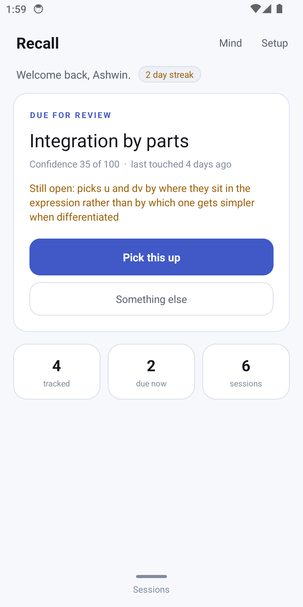
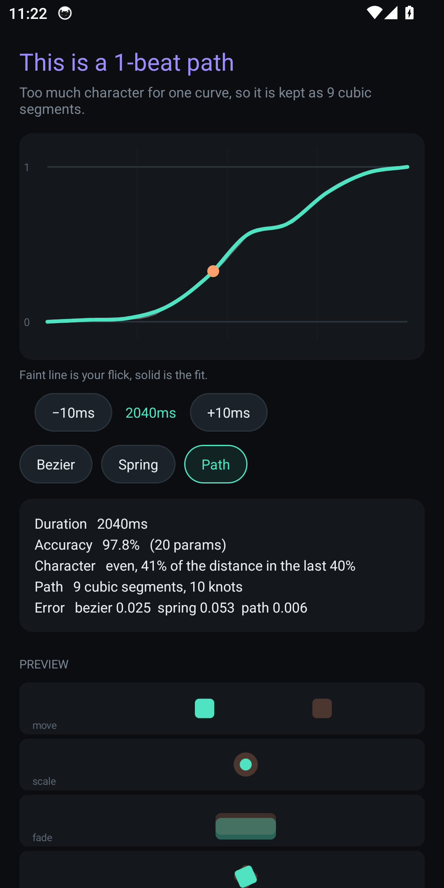
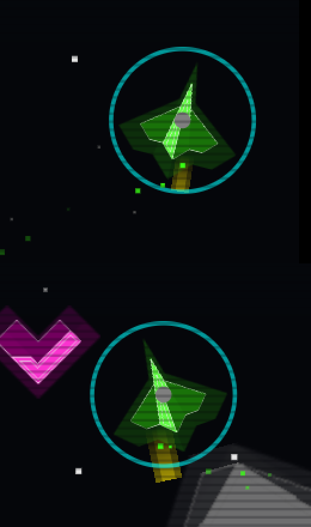

01
Traverse
Offline Android DSA tutor. Lessons and quizzes with authored misconceptions and spaced review. v1 is the first unit, Complexity and correctness.
- Java
- Android

Chennai, India — B.Tech CSE, SRM University
Computer Science student focused on Python, NLP and applied machine learning — journaling apps that sense emotion, tutoring platforms that grade themselves, models that cluster the unclusterable.
$ whoami
ashwin_r — cs engineer, class of 2027
$ ▌
Five Android apps. Each one has source, a live page, and a release to download.
Offline Android DSA tutor. Lessons and quizzes with authored misconceptions and spaced review. v1 is the first unit, Complexity and correctness.
Android study tutor with a local learner model. The student brings their own Gemini or Groq key.

Draw a motion with your thumb and export the easing curve to CSS, Jetpack Compose, Android, Flutter, and SwiftUI.

A retro bullet-hell for Android with gesture controls. Kenney CC0 art.

Five projects, each pushed to GitHub with full source. Click through to read the code.
A multi-portal e-learning system: students get targeted practice tests, instructors get a full analytics hub. SQLite stores quiz history; Pandas cleans and samples question banks; Matplotlib turns raw tables into subject-mastery and test-distribution charts.
A desktop journal that reads what you write and tracks how you felt while writing it. A Hugging Face DistilRoBERTa model paired with custom heuristics classifies text into seven emotional states at sentence level, plotted as an interactive timeline.
A movie-analytics platform that predicts ratings before you watch. Feature-importance analysis explains why a prediction landed where it did, surfaced through interactive dashboards rather than a single opaque number.
A GUI tool that groups patents by similarity using Agglomerative Hierarchical Clustering. PCA compresses high-dimensional patent features down to something you can actually see, rendered as dendrograms with cluster-quality metrics attached.
A premium, dark-themed reading platform built for people who read a lot: bookmarks that remember your place, reviews, personalized recommendations, and filtering that narrows a large catalog down fast.
I'm a Computer Science Engineering student at SRM University, Chennai, with a habit of picking apart systems to see how they work — then rebuilding pieces of them myself. Most of what I build sits at the intersection of Python and applied machine learning: tools that read messy human data — journal entries, quiz attempts, patent filings — and turn it into something structured enough to act on.
Open to internships, collaborations, and interesting problems involving data.
ashwinraj9800@gmail.com